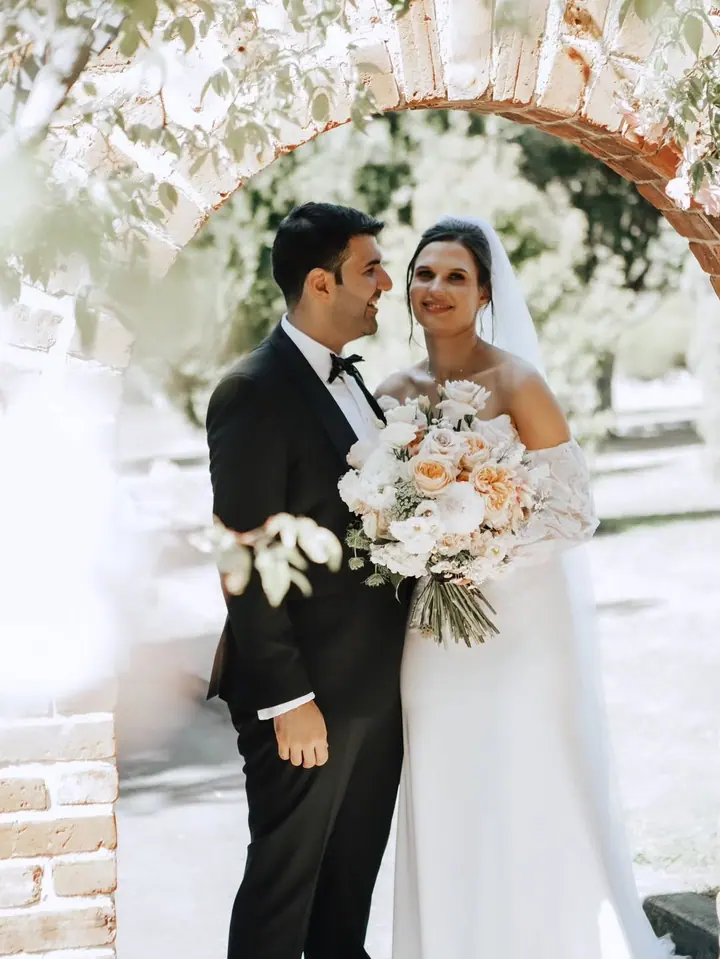
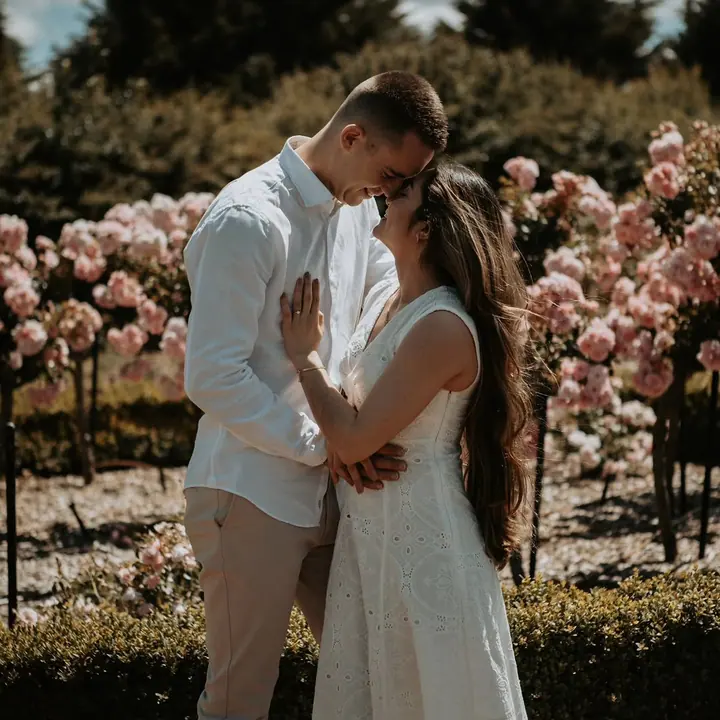
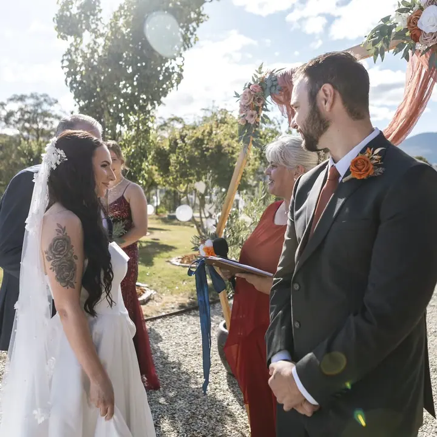
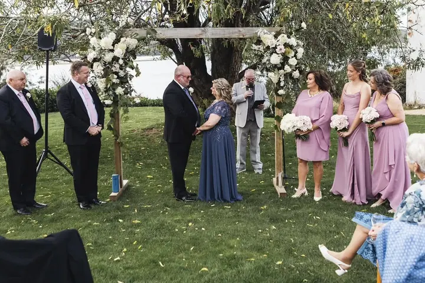
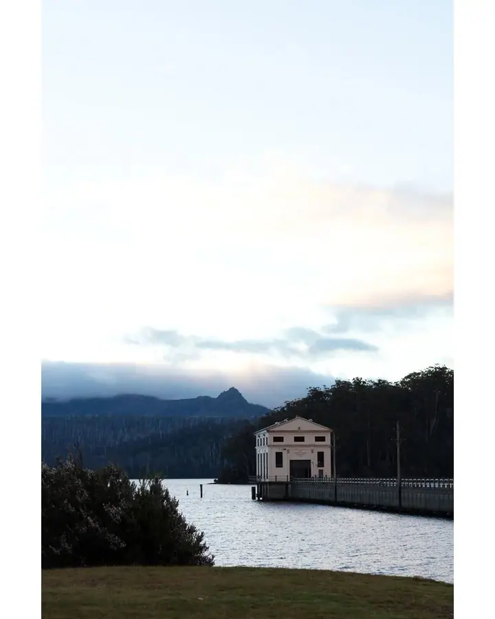

jedna
Svatby
Fotím celý svatební den od dojemných slz při obřadu až po večerní oslavu. Zachycuji ho tak, jak se opravdu odehrává, bez strojeného aranžování.


Jmenuji se Tiago a jsem fotograf na Tasmánii. Fotím svatby od tichých slz při obřadu až po zásnuby u horského jezera. Nejde mi jen o fotky, ale o vzpomínky, ke kterým se budete rádi vracet.
Více o mně
Co fotím
jedna
Fotím celý svatební den od dojemných slz při obřadu až po večerní oslavu. Zachycuji ho tak, jak se opravdu odehrává, bez strojeného aranžování.
dvě
Komorní obřad jen ve dvou nebo žádost o ruku uprostřed tasmánské přírody. Postarám se, aby z toho zůstaly fotky, ke kterým se budete vracet.
tři
Konference, galavečery a důležité firemní milníky. Zachytím energii večera i lidi, kteří ho tvoří.
Uvolněné focení celé rodiny, při kterém vznikají opravdové a nadčasové vzpomínky. Fotím i těhotenské focení.

Ať se k tomu pocitu můžete vracet znovu.

Za objektivem
Jsem Tiago, fotograf, kterého focení opravdu baví, a žiju na krásné Tasmánii. Nejvíc mě to táhne ke svatbám a elopementům, ale rád fotím i rodiny, galavečery a firemní akce.
Mým cílem je víc než jen udělat fotky. Chci vám dát nadčasové a opravdové vzpomínky, které budete mít rádi i za mnoho let. Proto nic zbytečně nearanžuji a zachycuji vaše chvíle přesně tak, jak se odehrávají.
Když to místo a příležitost dovolí, fotím i z dronu. Tasmánská krajina si pohled shora zaslouží.
Tiago
Napište mi pár slov o svém dni nebo akci a já vám připravím nabídku na míru.
Probereme, jak si den představujete, místo, program i to, na čem vám nejvíc záleží.
Jsem u toho nenápadně a fotím věci tak, jak se dějí. Vy se můžete věnovat svým blízkým.
Snímky pečlivě vyberu a upravím, aby vám co nejvěrněji vrátily atmosféru celého dne.
Portfolio
Otázky
Jsem z Tasmánie a fotím po celém ostrově, na statcích, v zahradách, u jezer i v horách. Máte vyhlédnuté konkrétní místo? Napište mi a domluvíme se.
Každá svatba i akce je jiná, a tak vám vždy připravím nabídku na míru. Stačí mi napsat přes formulář nebo na e-mail.
Ano, rád. Komorní obřad ve dvou nebo překvapení u jezera patří k focením, která mám nejraději.
Ano. Fotím konference, galavečery i firemní milníky a když se to hodí, nabízím i záběry z dronu.
Napište pár vět o tom, co si představujete. heloo@tiagophotographer.com